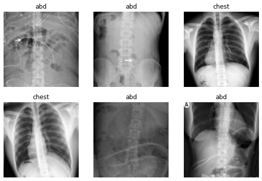
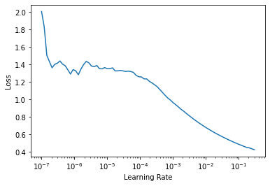
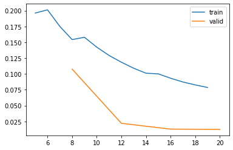
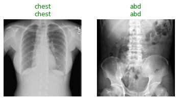
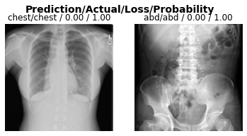
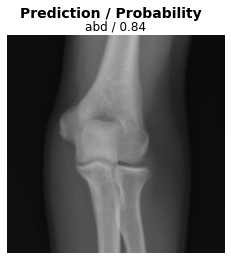
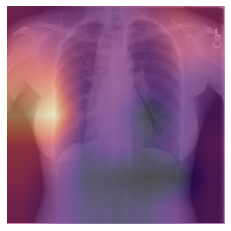
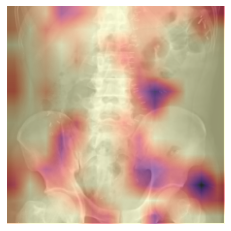

#collapse
import warnings
warnings.simplefilter('ignore')
import matplotlib.pyplot as plt
plt.rcParams["figure.figsize"] = (12, 12)

Introduction
In this demonstration, we will utilize techniques of computer vision, including deep convolutional neural networks (CNNs), to train an image classifier model capable of classifying radiographs as either chest or abdominal.
Code
We will utilize the fast.ai v2 library, written primarily by Jeremy Howard and Sylvain Gugger (with help from many others). It is written in the Python programming language and built on top of the PyTorch deep learning library.
The demonstration in this notebook relies heavily on examples from the fast.ai book, Deep Learning for Coders with fastai and PyTorch: AI Applications without a PhD by Jeremy Howard and Sylvain Gugger, which was written entirely in Jupyter notebooks, which are freely available for download on GitHub. A print copy of the book can be purchased from Amazon.
Data
This work is adapted from “Hello World Deep Learning in Medical Imaging {% fn 1 %}”. The chest and abdominal radiographs were obtained from Paras Lakhani’s GitHub repository.
{{ “Reference: Lakhani P, Gray DL, Pett CR, Nagy P, Shih G. Hello World Deep Learning in Medical Imaging. J Digit Imaging. 2018 Jun; 31(3):283-289. Published online 2018 May 3. doi: 10.1007/s10278-018-0779-6” | fndetail: 1 }}
Developers
- Walter F. Wiggins, MD, PhD - Duke University Hospital, Durham, NC, USA
- Kirti Magudia, MD, PhD, - University of California, San Francisco, CA, USA
- M. Travis Caton, MD, PhD - University of California, San Francisco, CA, USA
Acknowledgements
Other versions of this notebook implemented on the Kaggle Notebooks platform were presented at the 2019 Society for Imaging Informatics in Medicine (SIIM) Annual Meeting and for the American College of Radiology (ACR) Residents & Fellows Section (RFS) AI Journal Club.
We would also like to acknowledge the following individuals for inspiring our transition to the Google Colab platform with their excellent notebook from the 2019 RSNA AI Refresher Course: - Luciano M. Prevedello, MD, PhD - Felipe C. Kitamura, MD, MSc - Igor Santos, MD - Ian Pan, MD
System Setup & Downloading the Data
Important: Save a copy of this notebook in your Google Drive folder by selecting Save a Copy in Drive from the File menu in the top left corner of this page. This will allow you to modify the cells and save your results.
Warning: Make sure you have the runtime type set to “GPU”. See GIF below.

Setting up the runtime environment…
Running the following cell in Colab will install the necessary libraries, download the data and restart the session.
Warning: This will generate an error message, which we can safely ignore 😉.
::: {.cell _uuid=‘0c1e51dbcbe223c29555c5188b0df55b10ed8b06’ cellView=‘form’}
import os
!pip install fastai==2.1.4 >/dev/null
!pip install fastcore==1.3.1 >/dev/null
# **Downloading the data...**
!wget -q https://github.com/wfwiggins/RSNA-Image-AI-2020/blob/master/data.zip?raw=true
!mkdir -p data
!unzip -o data.zip?raw=true -d data >/dev/null
!rm data.zip?raw=true
os.kill(os.getpid(), 9):::
Exploring the Data
Let’s take a look at the directory structure and contents, then create some variables to help us as we proceed.
::: {.cell _uuid=‘4cfcb87c72a542aefce13f8453097c0d1eb0c7b9’ cellView=‘form’ outputId=‘c18af866-27cb-4f1b-b4a9-7e76ce8456e2’ execution_count=2}
from fastai.basics import *
from fastai.vision.all import *
# Set path variable to the directory where the data is located
path = Path('/content/data')
# Command line "magic" command to show directory contents
!ls {path}/**/*/content/data/test/abd:
abd_test.png
/content/data/test/chest:
chest_test.png
/content/data/train/abd:
abd0.png abd14.png abd19.png abd23.png abd28.png abd3.png abd8.png
abd10.png abd15.png abd1.png abd24.png abd29.png abd4.png abd9.png
abd11.png abd16.png abd20.png abd25.png abd2.png abd5.png
abd12.png abd17.png abd21.png abd26.png abd30.png abd6.png
abd13.png abd18.png abd22.png abd27.png abd31.png abd7.png
/content/data/train/chest:
chst33.png chst39.png chst45.png chst51.png chst57.png chst63.png
chst34.png chst40.png chst46.png chst52.png chst58.png chst64.png
chst35.png chst41.png chst47.png chst53.png chst59.png chst65.png
chst36.png chst42.png chst48.png chst54.png chst60.png
chst37.png chst43.png chst49.png chst55.png chst61.png
chst38.png chst44.png chst50.png chst56.png chst62.png
/content/data/val/abd:
abd0.png abd1.png abd2.png abd3.png abd4.png
/content/data/val/chest:
chst0.png chst1.png chst2.png chst3.png chst4.png:::
As you can see, the data directory contains subdirectories train, val and test, which contain the training, validation and test data for our experiment. train and val contain subdirectories abd and chest containing abdominal and chest radiographs for each data set. There are 65 training images and 10 validation images with balanced distributions over our target classes (i.e. approximately equal numbers of abdominal and chest radiographs in each data set and optimized for a classification problem).
Model Training Setup
Before we train the model, we have to get the data in a format such that it can be presented to the model for training.
Data Loaders
The first step is to load the data for the training and validation datasets into a ImageDataLoaders object from the fastai library. When training a model, the ImageDataLoaders will present training - and subsequently, validation - data to the model in batches.
Data Augmentation
In order to be sure that the model isn’t simply “memorizing” the training data, we will augment the data by randomly applying different transformations to each image before it is sent to the model.
Transformations can include rotation, translation, flipping, rescaling, etc.
Load the data into ImageDataLoaders with data augmentation
Note: When you run this next cell in Colab, a batch of data will be shown with or without augmentation transforms applied. (1) Run this cell once with the box next to
apply_transformsunchecked to see a sample of the original images. (2) Next, run the cell a few more times after checking the box next toapply_transformsto see what happens to the images when the transforms are applied.
::: {.cell _uuid=‘d1c24e4a78f57f12a42de3481db746fe0f170ee3’ cellView=‘form’ outputId=‘ba44aa2d-d8f1-40b2-e9ef-64500483f516’ execution_count=3}
# the following line of code utilizes Colab Forms
apply_transforms = True #@param {type: 'boolean'}
if apply_transforms:
flip = True
max_rotate = 10.0
max_warp = 0.2
p_affine = 0.75
else:
flip = False
max_rotate, max_warp, p_affine = 0, 0, 0
tfms = aug_transforms(
do_flip=flip,
max_rotate=max_rotate,
max_warp=max_warp,
p_affine=p_affine,
size=224,
min_scale=0.75
)
dls = ImageDataLoaders.from_folder(path, valid='val', seed=42, item_tfms=Resize(460), batch_tfms=tfms, bs=16)
dls.show_batch(max_n=6)
:::
Find the optimal learning rate
The learning rate is a hyperparameter that controls how much your model adjusts in response to percieved error after each training epoch. Choosing an optimal learning rate is an optimal step in model training.
From the fastai docs: > First introduced by Leslie N. Smith in Cyclical Learning Rates for Training Neural Networks, the LRFinder trains the model with exponentially growing learning rates and stops in case of divergence. > The losses are then plotted against the learning rates with a log scale.
> A good value for the learning rates is then either: > - 1/10th of the minimum before the divergence > - where the slope is the steepest
Note: When you run this cell for the first time in a Colab session, it will download a pretrained version of the model to your workspace before running the
LRFinder.
dls = ImageDataLoaders.from_folder(path, valid='val', seed=42, item_tfms=Resize(460), batch_tfms=aug_transforms(size=224, min_scale=0.75), bs=16)
learn = cnn_learner(dls, resnet18, metrics=accuracy)
learn.lr_find();Downloading: "https://download.pytorch.org/models/resnet18-5c106cde.pth" to /root/.cache/torch/hub/checkpoints/resnet18-5c106cde.pth
Transfer Learning
Deep learning requires large amounts of training data to successfully train a model.
When we don’t have enough data to work with for the planned task, starting with a pre-trained network that has been optimally trained on another task can be helpful. The concept of re-training a pre-trained network for a different task is called transfer learning.
Fine-tuning
In the process of re-training the model, we start by changing the final layers of the network to define the output or predictions our model will make. In order to avoid propagating too much error through the rest of the network during the initial training, we freeze the other layers of the network for the first cycle or epoch of training. Next, we open up the rest of the network for training and train for a few more epochs. This process is called fine-tuning.
Epochs and data augmentation
During each epoch, the model will be exposed to the entire dataset. Each batch of data will have our data transformations randomly applied in order to provide data augmentation. This helps to ensure that our model never sees the exact same image twice. This is important because we wouldn’t want our model to simply memorize the training dataset and not converge on a generalized solution, resulting in poor performance on the validation dataset.
The loss function
In a classification task, you’re either right or wrong. This binary information doesn’t give us much nuance to work with when training a model. A loss function give us a numeric estimation of “how wrong” our model is. This gives us a target to optimize during the training process.
When reviewing the results of successive epochs in training, the loss on your validation dataset should always be decreasing. When it starts to increase, that is a sign of your model overfitting to the training dataset.
Fine-tuning the model
We will fine-tune our model to our task in the following steps: 1. Select the number of epochs for which we will train the model 2. Choose a base learning rate based on the results from the LRFinder plot above 3. Run the cell to initiate model training utilizing the fine_tune() method from fastai
Tip: If you’re running this notebook in Colab, you can re-run this cell with different hyperparameters to better understand how they affect the result.
# the following lines of code utilize Colab Forms
epochs = 5 #@param {type: "integer"}
base_lr = 2e-3 #@param {type: "number"}
learn = cnn_learner(dls, resnet18, metrics=accuracy)
learn.fine_tune(epochs, base_lr=base_lr)| epoch | train_loss | valid_loss | accuracy | time |
|---|---|---|---|---|
| 0 | 1.106555 | 1.336308 | 0.500000 | 00:01 |
| epoch | train_loss | valid_loss | accuracy | time |
|---|---|---|---|---|
| 0 | 0.124234 | 0.632943 | 0.700000 | 00:01 |
| 1 | 0.175012 | 0.107626 | 0.900000 | 00:01 |
| 2 | 0.129196 | 0.022088 | 1.000000 | 00:01 |
| 3 | 0.100126 | 0.012920 | 1.000000 | 00:01 |
| 4 | 0.078639 | 0.012502 | 1.000000 | 00:01 |
Review training curves
The visual representation of the training and validation losses are useful to evaluate how successfully you were able to train your model. You should see the validation loss continuously decreasing over subsequent batches.
Important: If the validation loss begins to increase, your model may be starting to overfit. Consider restarting your training experiment with one fewer epochs than it took to overfit.
learn.recorder.plot_loss()
Testing the Model
Test the model on the test dataset
When you run the following cell, the first line shows the groundtruth for whether the radiograph is of the chest or abdomen. The second line is the model prediction for whether the image is a chest or abdominal radiograph.
test_files = get_image_files(path/'test')
test_dl = learn.dls.test_dl(test_files, with_labels=True)
learn.show_results(dl=test_dl)
A little more detail on the predictions
Running this cell will provide us with the loss on each image, as well as the model’s predicted probability, which can be thought of as the model’s confidence in its prediction.
Note: If the model is correct and completely confident, the loss should be near “0.00” and the probability will be “1.00”, respectively.
interp = ClassificationInterpretation.from_learner(learn, dl=test_dl)
interp.plot_top_losses(k=2)
Test the model on a surprise example
Here, we present the model with an unexpected image (an elbow radiograph) and see how it responds.
y = get_image_files(path, recurse=False)
test_dl = learn.dls.test_dl(y)
x, = first(test_dl)
res = learn.get_preds(dl=test_dl, with_decoded=True)
x_dec = TensorImage(dls.train.decode((x,))[0][0])
fig, ax = plt.subplots()
fig.suptitle('Prediction / Probability', fontsize=14, fontweight='bold')
x_dec.show(ctx=ax)
ax.set_title(f'{dls.vocab[res[2][0]]} / {max(res[0][0]):.2f}');
When presented with this radiograph of an elbow, the model makes a prediction but is less confident than with the other test images.
Important: (1) A deep learning classification model can only learn what we teach it to learn.
Important: (2) In designing our model implementation, we might consider designing a pre-processing step in which the data (or metadata) is checked to ensure the input to the model is valid.
Visualizing Model Inferences
Class activation map (CAM)
CAM allows one to visualize which regions of the original image are heavily weighted in the prediction of the corresponding class. This technique provides a visualization of the activations in the final convolutional block of a Convolutional Neural Network (CNN).
CAM can also be useful to determine if the model is “cheating” and looking somewhere it shouldn’t be to make its prediction (i.e. radioopaque markers placed by the technologist).
Note: If you are running this cell in Colab, choose which of the two test images you would like to examine and run this cell to see the CAM output overlayed on the input image.
test_case = 'chest' #@param ['abd', 'chest']
cls = 0 if test_case == 'abd' else 1
label = test_case
y = get_image_files(path/'test'/label)
test_dl = learn.dls.test_dl(y, with_labels=True)
hook = hook_output(learn.model[0])
x, _ = first(test_dl)
with torch.no_grad(): output = learn.model.eval()(x)
act = hook.stored[0]
cam_map = torch.einsum('ck,kij->cij', learn.model[1][-1].weight, act)
x_dec = TensorImage(dls.train.decode((x,))[0][0])
_, ax = plt.subplots()
x_dec.show(ctx=ax)
ax.imshow(cam_map[cls].detach().cpu(), alpha=0.6, extent=(0,224,224,0),
interpolation='bilinear', cmap='magma');
hook.remove()
Grad-CAM
Gradient-weighted CAM (Grad-CAM) allows us to visualize the output from any convolutional block in a CNN.
By default, this cell is setup to show the Grad-CAM output from the final convolutional block in the CNN, for comparison to the CAM output.
Note: If you’re running this notebook in Colab, (1) choose which of the two test images you would like to examine and run this cell to see the Grad-CAM output overlayed on the input image, then (2) select a different block and re-run the cell to see how the output changes for different blocks in the network.
test_case = 'abd' #@param ['abd', 'chest']
cls = 0 if test_case == 'abd' else 1
label = test_case
y = get_image_files(path/'test'/label)
test_dl = learn.dls.test_dl(y, with_labels=True)
x, _ = first(test_dl)
mod = learn.model[0]
block = -2 #@param {type: "slider", min: -8, max: -1, step: 1}
hook_func = lambda m,i,o: o[0].detach().clone()
with Hook(mod[block], hook_func, is_forward=False) as hookg:
with Hook(mod[block], hook_func) as hook:
output = learn.model.eval()(x.cuda())
act = hook.stored
output[0, cls].backward()
grad = hookg.stored
w = grad[0].mean(dim=[1,2], keepdim=True)
cam_map = (w * act[0]).sum(0)
x_dec = TensorImage(dls.train.decode((x,))[0][0])
_, ax = plt.subplots()
x_dec.show(ctx=ax)
ax.imshow(cam_map.detach().cpu(), alpha=0.6, extent=(0,224,224,0),
interpolation='bilinear', cmap='magma');